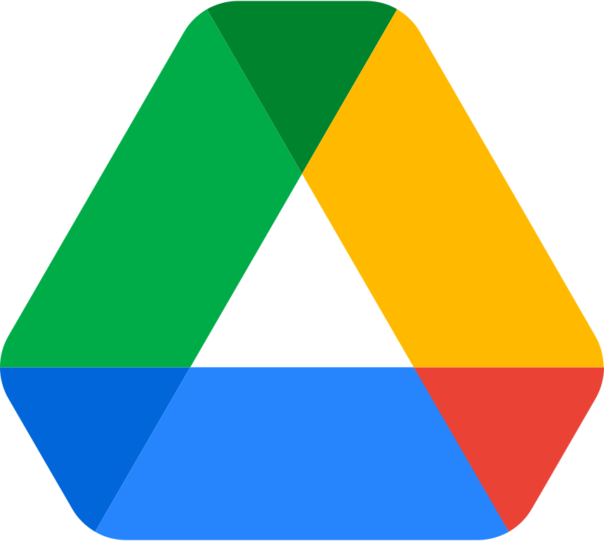

 Google Drive
You can add links to Google Drive images, html files and documents.
Google Drive image
To display a Google Drive image in your Markdown file, use the following url pattern.
<img src="https://drive.google.com/uc?export=view&id=xxxxx" alt="" width="80">
Replace xxxxx with the id of your Google Drive image and adapt the size.
Example
Google Drive pdf file
To display a Google Drive pdf file content in your Markdown file, use the following url pattern
<iframe
width="800" height="600"
src="https://drive.google.com/file/d/xxxxx/preview">
</iframe>
Replace xxxxx with the id of your Google Drive pdf file.
Example
Google Drive folder
To display a Google Drive folder content in your Markdown file, use the following url pattern.
<iframe
width="600" height="400"
src="https://drive.google.com/embeddedfolderview?id=xxxxx">
</iframe>
Replace xxxxx with the id of your Google Drive folder.
Example
Google Sheet
To embed a Google Sheet content in your Markdown file, use the publish to the web function and adapt the size.
Example
Google Doc
To embed a Google Doc content in your Markdown file, use the publish to the web function and adapt the size.
Example